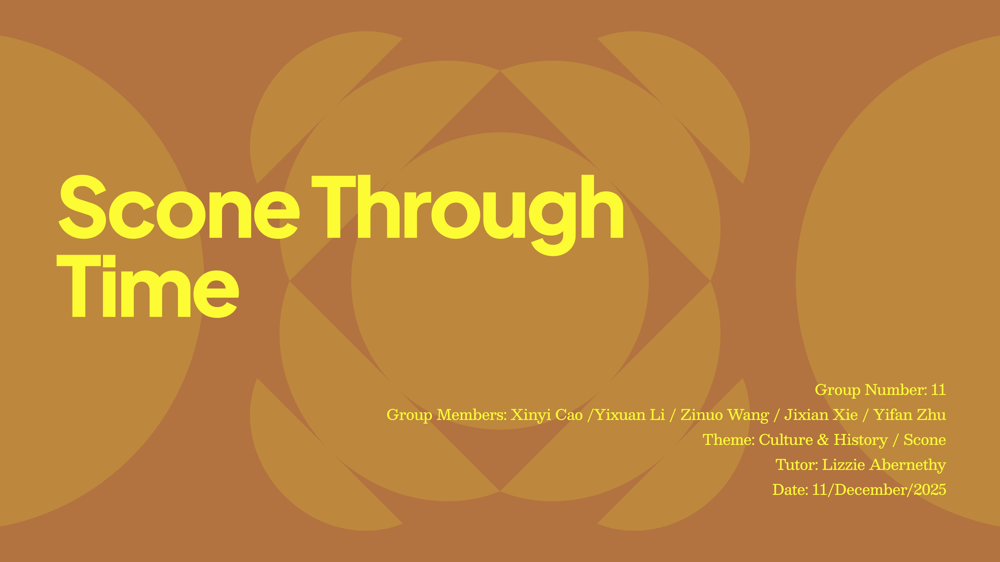
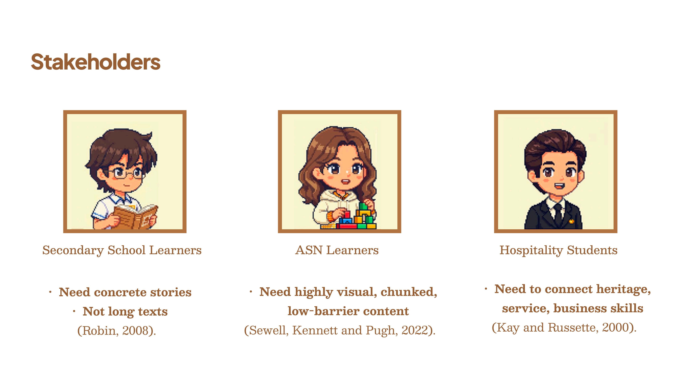
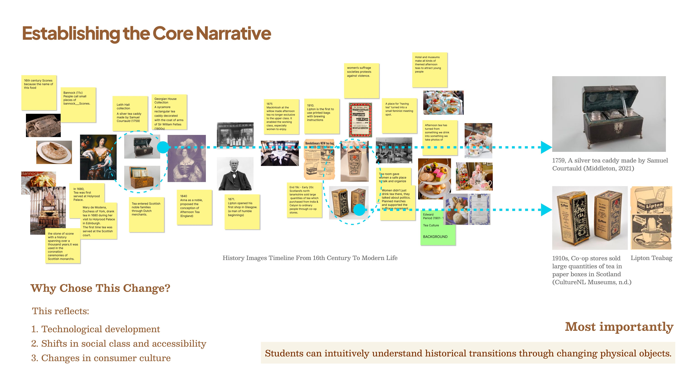
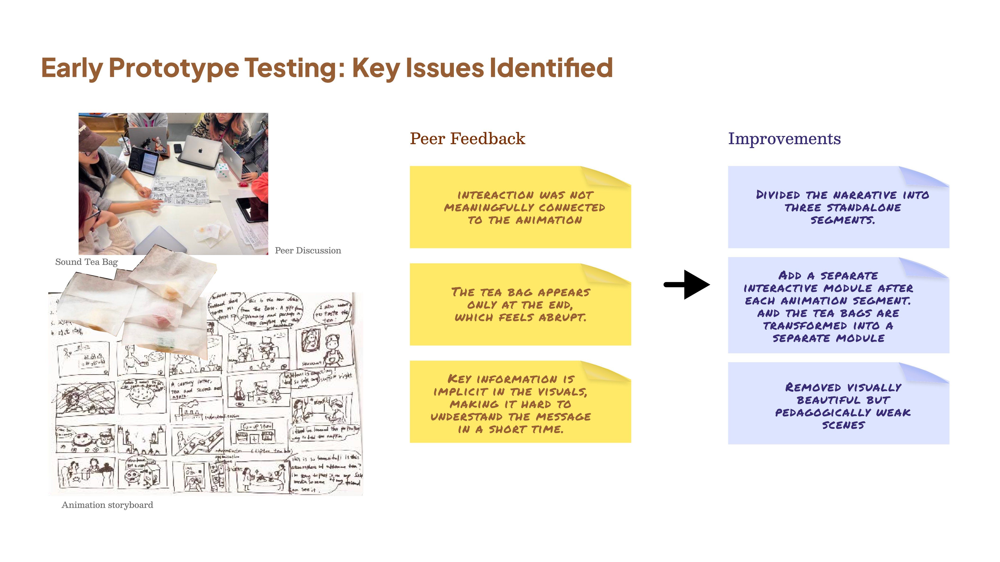
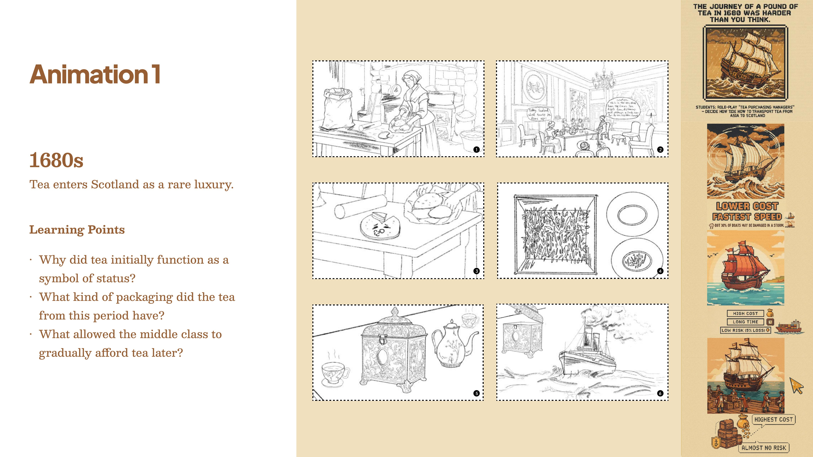
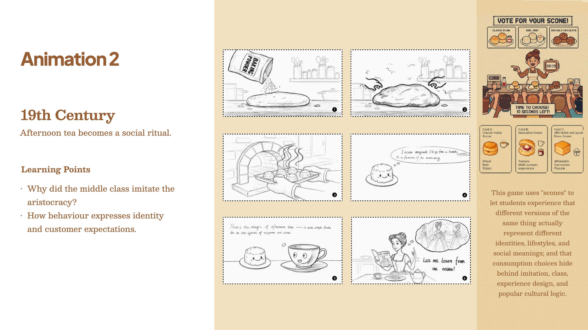
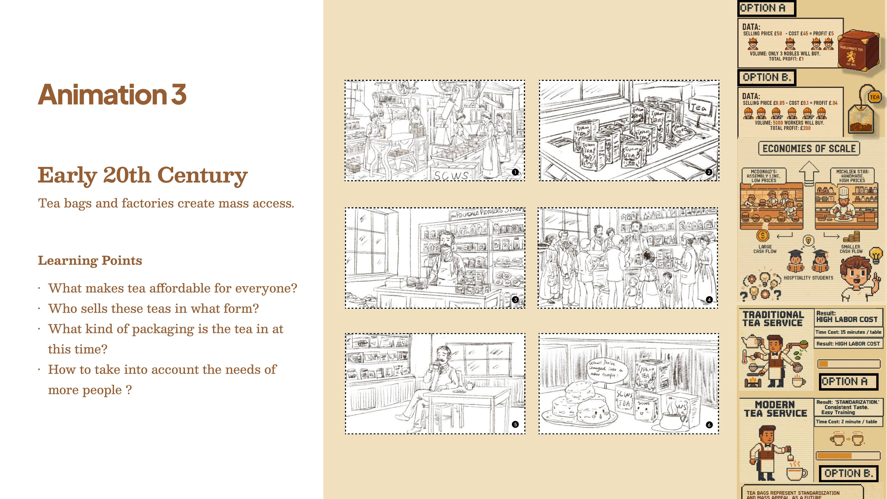
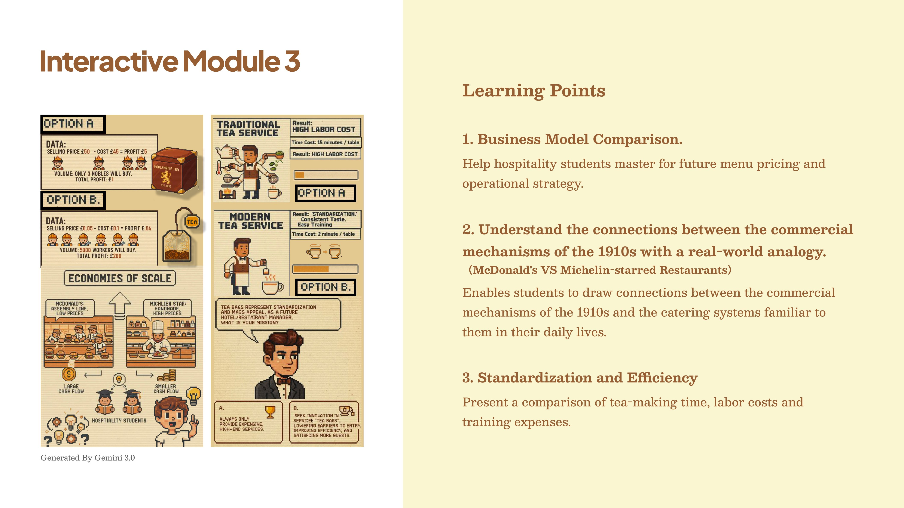

Cultural Service Learning Prototype
Scone Through Time
A digital learning journey for service innovation and inclusive hospitality.

A cultural service learning prototype that uses Scottish tea culture, object-led storytelling and interactive micro-modules to help young learners connect cultural heritage with service innovation and inclusive hospitality.
Scone Through Time was developed in response to a real educational and cultural learning context. The project explored how Scottish afternoon tea and scone culture could become a low-barrier learning experience for secondary, ASN and hospitality learners.
In this case study
A research-to-learning pivot.
Context
Everyday cultural objects became a way into service learning.
Scottish afternoon tea and familiar food objects offered a clear entry point into wider questions of heritage, hospitality and service. The project explored how cultural material could become a learning experience rather than a static display.
The aim was to help students connect past social rituals with present-day service thinking, business innovation and inclusive customer experience.
Challenge
The challenge was not to display cultural history.
Early research was rich but scattered, mixing tourism stories, hotel narratives, lifestyle media, commercial references and historical sources. This made it hard to separate teachable cultural material from promotional storytelling.
The project needed to turn fragmented research into a visual, low-barrier and transferable learning experience for young learners.
Rather than inventing a fictional history activity, the team used real learner needs, educational constraints and peer testing feedback to shape the project into a structured micro-learning experience.
Stakeholders
Three learner groups shaped the experience structure.
Secondary school learners
Need concrete stories and clear examples rather than long explanatory text.
ASN learners
Need highly visual, chunked and low-barrier content that supports different learning access needs.
Hospitality students
Need to connect heritage, service experience and business skills in a practical way.

Research Challenge
Too much material, not enough teachable story.
Explored broad Scottish tea, food heritage, tourism and hospitality sources.
The research field was fragmented and difficult to turn into a focused learning journey.
Young learners need a teachable story, not a dense archive of disconnected facts.
Simplify the project around recognisable cultural objects and clear learning moments.
Narrowing The Scope
Research was filtered through time, people and item.
Fragmented tea / food culture research
Time / People / Item
Object-led cultural learning
This filtering step shifted the project from a broad cultural topic into a more teachable journey built around familiar objects such as scones, tea caddies and tea bags.
Core Narrative
Three cultural shifts made the learning journey clearer.
Rare access
Tea enters elite and aristocratic spaces, helping learners understand status, scarcity and early access.
Shared behaviour
Afternoon tea becomes a social ritual connected with class, identity, imitation and public life.
Scalable service
Tea bags, co-op stores and standardised packaging make tea more affordable, teachable and widely accessible.

Ideation
Crazy 8s helped generate and filter possible learning formats.
Generated ideas including board games, short films, sound tea bags, miniature models, workshops and interactive screens.
Some ideas were engaging, but many were too complex, too technology-heavy or weak as teaching tools for a peer-tested classroom-style prototype.
The outcome needed to work in a classroom-like learning context with short attention spans and mixed learning needs.
Select stop-motion and object-based interaction because they balanced accessibility, storytelling, feasibility and engagement.
Historical accuracy
Middle-school accessibility
Teaching-tool potential
Feasibility & engagement
Refinement
SCAMPER turned many ideas into specific design decisions.
Use stop-motion instead of live shooting
More feasible, visual and suitable for young learners.
Remove high-barrier VR ideas
Lower cost and easier to deliver in a short learning session.
Treat tea bags as cultural containers
The tea bag became a physical learning object, not only a prop.
Move interaction after each segment
Students process information immediately instead of waiting until the end.
Merge animation with object-based interaction
This made the learning experience more active and less like passive viewing.
Prototype Testing & Major Pivot
From beautiful storytelling to structured learning.
Feedback
The prototype was tested through peer feedback and classroom-style review.
Issue
A long linear story was less effective than short learning modules with interaction after each segment.
Design Change
Add a separate interactive prompt after each animation segment.
Feedback
The tea bag appeared only at the end.
Issue
The key object felt abrupt and carried too little meaning.
Design Change
Transform tea bags into a dedicated learning module.
Feedback
Important information was implicit in the visuals.
Issue
Students could remember surface details but miss the deeper service message.
Design Change
Divide the story into three standalone micro-course modules.
Feedback
Some scenes were visually attractive.
Issue
They did not clearly support the learning objective.
Design Change
Remove visually beautiful but pedagogically weak scenes.

Final Outcome
Three micro-learning modules connect culture with service thinking.

Tea enters Scotland as a rare luxury
Learning focus: status, packaging, early access and social class.

Afternoon tea becomes a social ritual
Learning focus: identity, imitation, customer expectations and experience design.

Tea bags and factories create mass access
Learning focus: standardisation, affordability, business model and inclusive service.
Interactive Learning Module
The tea bag became a service innovation metaphor.
High ritual, lower scalability
Traditional service can feel beautiful and personal, but it may require more time, training and labour.
Standardised, teachable and accessible
Tea bag innovation is not only packaging innovation. It represents standardisation, lower cost, easier training, wider access and scalable service design.

Potential Educational Value
The proposal creates a bridge between cultural learning and service thinking.
Cultural connection
Could help learners connect familiar heritage objects with modern hospitality and service experience.
Classroom discussion
Could support discussion by making abstract cultural and business concepts easier to understand.
Inclusive service thinking
Could help hospitality learners think about pricing, accessibility, customer inclusivity and scalable service design.
Reflection
Cultural education needs more than beautiful storytelling.
Meaning needs structure
For young learners, visual storytelling needs direct learning cues, interaction and immediate processing moments.
Objects can carry service logic
The tea bag helped translate abstract ideas such as standardisation, lower cost and wider access into a concrete learning object.
Learning should transfer
A strong educational service experience helps learners understand not only what happened in the past, but why it matters now and how it can inform future service decisions.
Competencies for service, transformation and innovation roles
Research filtering
Turning fragmented cultural research into a teachable narrative with clear learning moments.
Learning experience design
Designing visual, chunked and interactive modules for different learner needs.
Iteration through testing
Using feedback to pivot from passive storytelling to structured micro-learning.
Service innovation framing
Connecting heritage objects with inclusive business models, access and scalable service design.